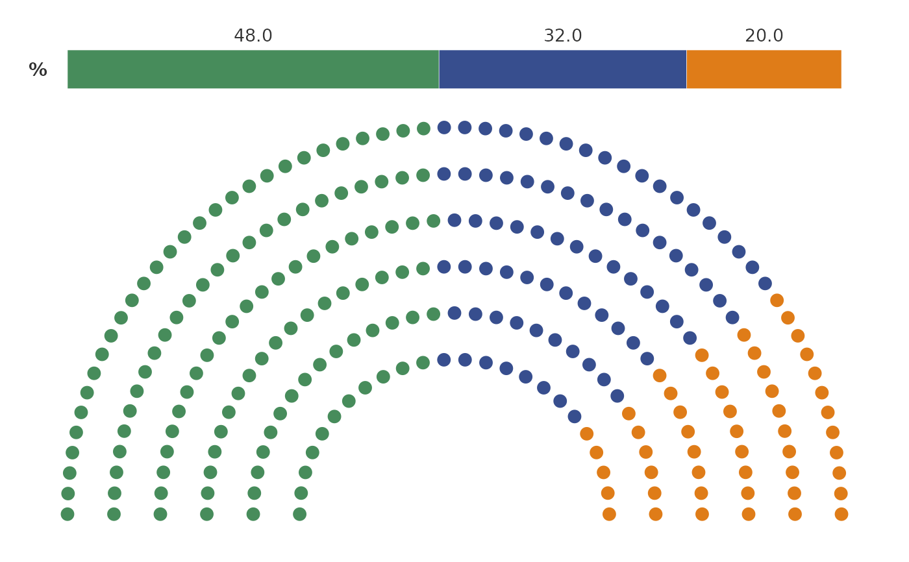

plot_parliament creates a visual representation of a parliament's seat distribution by party.
It depicts the number of seats each party holds in a semi-circular parliament layout,
with optional addition of a percentage bar to show the popular vote won by each party.
Usage
plot_parliament(
data,
partyCol,
seatCol,
percentCol = NULL,
colours = colour_pal("catExtended"),
size = 3,
alpha = 1,
title = NULL,
subtitle = NULL,
legend = c("none", "right", "bottom", "left", "top"),
majorityLine = FALSE,
extendLine = 0.05,
num_rows = NULL,
rMin = 1,
rMax = 2.5
)Arguments
- data
A data frame containing survey data, specifically party names and their seat counts.
- partyCol
The column in
datarepresenting the names of political parties.- seatCol
The column in
datarepresenting the number of seats held by each party.- percentCol
Optional: The column in
datarepresenting the popular vote won by each party.- colours
A named vector of colours for the parties. If unspecified, default colours from
colour_pal("catExtended")are used.- size
Size of each seat marker in the plot.
- alpha
Transparency level of seat markers.
- title
Title of the plot.
- subtitle
Subtitle of the plot.
- legend
Position of the legend in the plot. Can be 'none', 'right', 'bottom', 'left', or 'top'.
- majorityLine
Boolean; if
TRUE, adds a line indicating the majority threshold.- extendLine
Length to extend the majority line on both sides, if
majorityLineisTRUE.- num_rows
The number of rows to distribute seats across in the semi-circle. If
NULL, it's calculated based on total seats.- rMin
Minimum radius for the innermost row in the semi-circle.
- rMax
Maximum radius for the outermost row in the semi-circle.
Value
A ggplot2 object representing the seat distribution in a parliament, with options to include a percentage bar and a majority line.
Examples
# Sample usage with fictional data
parliament_data <- data.frame(
Party = c("Party A", "Party B", "Party C"),
Seats = c(120, 80, 50),
Percentage = c(48, 32, 20)
)
plot_parliament(parliament_data, partyCol = "Party", seatCol = "Seats", percentCol = "Percentage")
